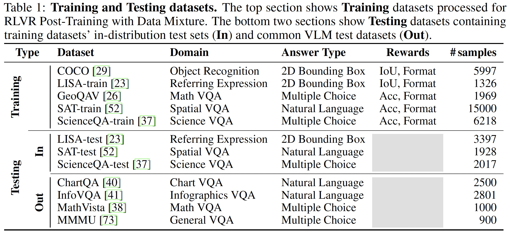

Introduction

Reinforcement Learning with Verifiable Rewards (RLVR) has recently emerged as a powerful paradigm for post-training large language models (LLMs), achieving state-of-the-art performance on tasks with structured, verifiable answers. Applying RLVR to Multimodal LLMs (MLLMs) presents significant opportunities but is complicated by the broader, heterogeneous nature of vision-language tasks that demand nuanced visual, logical, and spatial capabilities. As such, training MLLMs using RLVR on multiple datasets could be beneficial but creates challenges with conflicting objectives from interaction among diverse datasets, highlighting the need for optimal dataset mixture strategies to improve generalization and reasoning. We introduce a systematic post-training framework for Multimodal LLM RLVR, featuring a rigorous data mixture problem formulation and benchmark implementation. Specifically, (1) We developed a multimodal RLVR framework for multi-dataset post-training by curating a dataset that contains different verifiable vision-language problems and enabling multi-domain online RL learning with different verifiable rewards; (2) We proposed a data mixture strategy that learns to predict the RL fine-tuning outcome from the data mixture distribution, and consequently optimizes the best mixture. Comprehensive experiments showcase that multi-domain RLVR training, when combined with mixture prediction strategies, can significantly boost MLLM general reasoning capacities. Our best mixture improves the post-trained model's accuracy on out-of-distribution benchmarks by an average of 5.24% compared to the same model post-trained with uniform data mixture, and by a total of 20.74% compared to the pre-finetuning baseline.
Reinforcement Learning with Verifiable Rewards (RLVR) has pushed language-only models to state-of-the-art results on reasoning tasks, yet extending it to multimodal LLMs is non-trivial: verifiable VL datasets are scarce and highly heterogeneous, and existing efforts usually fine-tune on just one task domain, which limits generalization. This focus can be inadequate for achieving the desirable generalization and comprehensive reasoning capabilities of MLLMs. While pooling several diverse datasets could cover a broader range of vision-language skills, using multiple training datasets introduces challenges, including potential conflicting objectives resulting from interactions among diverse datasets, as well as corresponding unstable behaviors during training This tension makes the dataset mixture itself a core design question—
Q — How to mix diverse datasets in RLVR to achieve the wide-range of multimodal capabilities??

Scatter & Observe.
uniform recipes establish baselines.
Score‑Driven Tweaks.
adapt weights from baseline scores.
Predict & Search.
parametric function fits observation.
Even a uniform blend of our five datasets lifts every in‑domain score—and, crucially, boosts out‑of‑domain accuracy over the pre‑fine‑tuned baseline.
More data is not always better. The left figure shows single‑dataset runs that beat the “All” mixture on certain benchmarks, while the right figure reveals that dropping one source sometimes improves out‑of‑domain performance. The takeaway: interactions between datasets can be cooperative or antagonistic, so we need smarter weighting than “just add more.”
A linear model or PCA fails to capture the curved landscape of mixture → performance. The quadratic surrogate, in comparison, tracks both training and held‑out folds, making it a reliable oracle for mixture search that powers our Model‑based strategy.
Seed Mixtures set the baseline; Heuristic Mixtures lift both median and minimum scores; while the Model‑based Mixtures achieve the highest median accuracy with the lowest variance— evidence that a learned surrogate pays off.
@misc{liang2025modomodomultidomaindatamixtures,
title={MoDoMoDo: Multi-Domain Data Mixtures for Multimodal LLM Reinforcement Learning},
author={Yiqing Liang and Jielin Qiu and Wenhao Ding and Zuxin Liu and James Tompkin and Mengdi Xu and Mengzhou Xia and Zhengzhong Tu and Laixi Shi and Jiacheng Zhu},
year={2025},
eprint={2505.24871},
archivePrefix={arXiv},
primaryClass={cs.CV},
url={https://arxiv.org/abs/2505.24871},
}